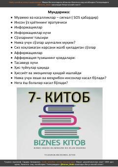

7КMuammo va kasalliklarning sababi — ichki fikr va his-tuyg'ularingizda.
Ushbu kitob muammo va kasalliklarning inson ichki dunyosi, fikrlari va his-tuyg'ulari bilan bog'liqligini tushuntiradi. Muallif tortishish qonuni, affirmatsiyalar, tasavvur kuchi va so'zlarning ta'siri haqida fikr yuritadi. Kitob o'quvchini o'z hayotining yaratuvchisi sifatida anglashga undaydi.